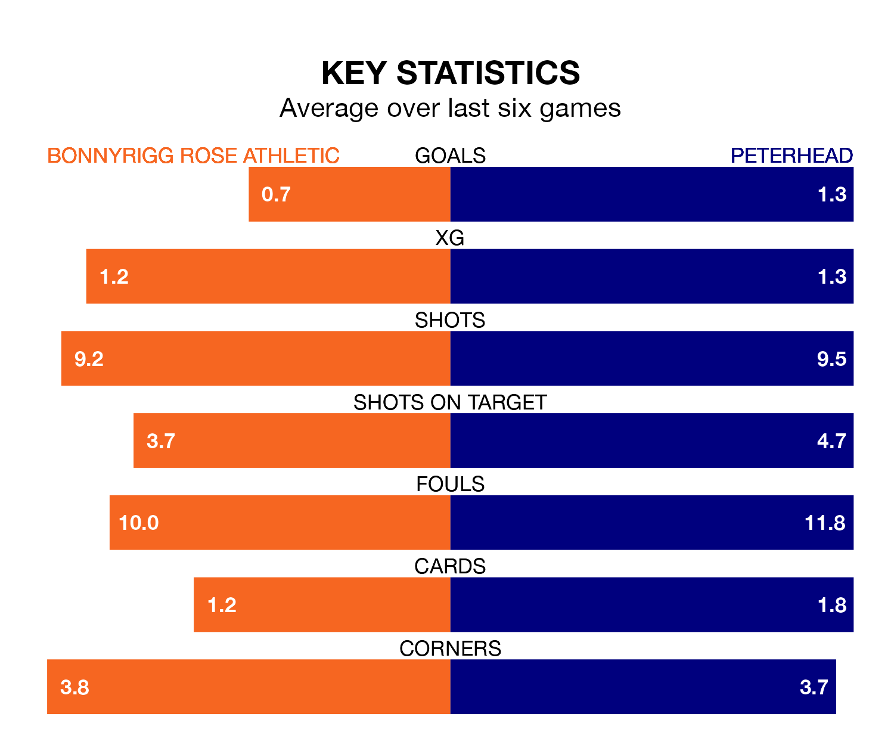

Relegation candidates Bonnyrigg Rose Athletic face a challenge against high-flying Peterhead at New Dundas Park on Saturday.
Bonnyrigg Rose Athletic are eighth in the League Two table, and have picked up seven wins and 10 draws in their 31 games to date.
The Blue Toon, meanwhile, are second in the standings with 51 points, having won 14 and drawn nine, and are 13 points behind table-toppers Stenhousemuir.
With 49 goals in 31 games so far this season, Peterhead are the league's second-highest scorers with 1.6 goals per game. And they are conceding fewer than average, letting in 32 goals at a rate of 1.0 per game.
Bonnyrigg Rose, meanwhile, are below average scorers, with 1.2 goals per game, compared to a league average of 1.3. They have conceded 1.4 goals per game.
Athletic are in terrible form in League Two, with no wins and two draws from their last six games.
With two wins and three draws over that period, the Blue Toon's form is much better – they have taken nine points from 18, compared to the hosts' two.
In Neil Martyniuk, Bonnyrigg Rose have one of the league's sharpest shooters so far this season. He has notched 11 goals in 29 appearances, to sit fourth in the scoring charts.
His goal rate of one every 232 minutes is quicker than that of Kieran Shanks, the away team's top scorer with a goal every 309 minutes, and a total of eight goals in 29 games.
In the last three years, Bonnyrigg Rose and Peterhead have played each other on three occasions. Peterhead won one of them and they drew the other.
Their last meeting was on February 20, when they played out a 0-0 draw.
Bonnyrigg Rose's last match was on Saturday, a 1-1 draw against Stranraer, with Martyniuk getting the goal for Bonnyrigg Rose.
Peterhead beat Clyde 4-1 last time out, also on Saturday, with Peter Pawlett (three) and Joe McKee on the scoresheet.
Updated: 16:41 (UTC), 04/04/24